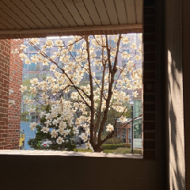
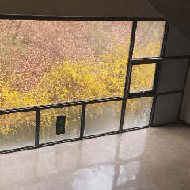
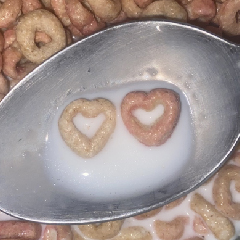
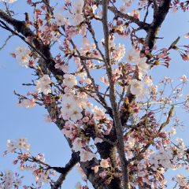
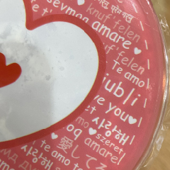
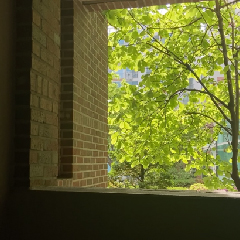
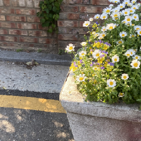
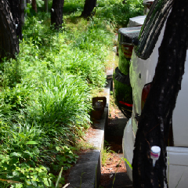

저는 긍정적인 사고 방식이 여러 부분에서 도움이 된다고 생각합니다. 왜냐하면 불필요한 생각과 감정을 줄일 수 있기 때문입니다.
예를 들어 컵에 물이 반 잔 남았을 때 물이 반이나 없어졌네... 보다 물이 반이나 남았네? 라고 생각하면 비관적인 생각으로 인해 오는 은근한 감정소모를 줄일 수 있기에 저는 긍정적인 사고가 중요한 가치라고 생각합니다.
휴식두번째로 제가 추구하는 가치는 휴식입니다. |
  |
애정세번째로 제가 추구하는 가치는 애정입니다. |
   |
도덕네번째로 제가 추구하는 가치는 도덕입니다. |
   |